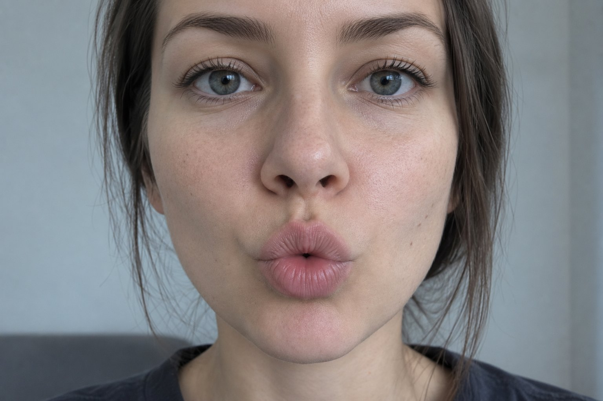

ИИ-коуч английского произношения
Приложение через камеру и микрофон сканирует вашу мимику и произношение, выдавая подсказки к каждому звуку.
ИИ-разбор ошибок
Четкое произношение
Понимают с первого раза
Принимают за своего
Ваша фронтальная камера/uː/ в school
REC

ваша артикуляция